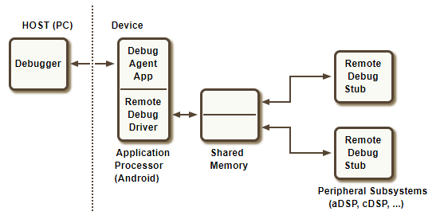

Debugging resources
Introduction
Why is it not working?
All software developers find themselves in this situation at one time or another. And there are many ways of approaching such a situation, with or without the use of tools.
Debugging is best when you don't have to do it. New Hexagon SDK users should refer to the FastRPC debugging documentation, which discusses a number of common issues that users run into and that are difficult to debug.
When issues occur on the simulator or target, understanding and using proper debugging tools can make the debugging process less painful. The debugging section below provides an introduction of the Hexagon LLDB tool, which can be used to debug your application either on simulator or on target.
Debugging tools
qprintf
The SDK comes with the qprintf library. This library provides different APIs to display scalar and vector registers in various formats from C/C++ or assembly. This library works on both the simulator and the target.
For example, after including qprintf_asm.h to your assembly code, insert the following line.
qprintf("v0 = %d",v0);
This will display the contents of HVX register V0 as a succession of 32-bit integers in the logs that are accessible using mini-dm or logcat:
qprintf_example_asm.S[174]: v0 =
-1,-1,-1,-1,-1,-1,-1,-1
-1,-1,-1,-1,-1,-1,-1,-1
-1,-1,-1,-1,-1,-1,-1,-1
-1,-1,-1,-1,-1,-1,-1,-1
The library also supports more advanced options for controlling the format of the output, the elements to hide or display, or the number of columns for displaying the elements of a vector register. For example:
qprintf("Displaying scalar registers in various formats: %u, %x. %23d. %+.6d or %5.2f. Etc.",r20,r20,r20,r20,r21);
The output will be
qprintf_example_asm.S[162]: Displaying scalar registers in various formats: 20, 14, 20, +000020, 4.00. Etc.
Another example:
qprintf("Masked vector register contents as 16-bit unsigned integers in rows of 5 elements: %m(5)uu",v0);
The output will be
qprintf_example_asm.S[183]: Masked vector register contents as 16-bit unsigned integers in rows of 5 elements:
[7e]= 65535,[7c]= 65535,[76]= 65535,[74]= 65535,[6e]= 65535
[6c]= 65535,[66]= 65535,[64]= 65535,[5e]= 65535,[5c]= 65535
[56]= 65535,[54]= 65535,[4e]= 65535,[4c]= 65535,[46]= 65535
[44]= 65535,[3a]= 65535,[38]= 65535,[32]= 65535,[30]= 65535
[2a]= 65535,[28]= 65535,[22]= 65535,[20]= 65535,[1a]= 65535
[18]= 65535,[12]= 65535,[10]= 65535,[0a]= 65535,[08]= 65535
[02]= 65535,[00]= 65535,
For more details on this library, see the library package in $HEXAGON_SDK_ROOT/libs/qprintf and its documentation.
For examples on how to use the library, see the code example in qprintf_example.
Debugging on Simulator
It is possible to debug a process on simulator from either the command line or the Eclipse IDE
Debug process on Hexagon simulator using command line
This chapter describes how to debug the multithreading example on simulator from command line.
Please use the following steps. Here we are debugging a v65 architecture based application. Steps to debug v66/v68 application are also same as below, it is as simple as replacing v65 with v66/v68 everywhere it appears in the instructions.
-
Build project
cd %HEXAGON_SDK_ROOT% for Windows or cd $HEXAGON_SDK_ROOT for Linux setup_sdk_env.cmd for Windows or setup_sdk_env.source for Linux cd examples\multithreading make hexagon DSP_ARCH=v65 BUILD=Debug VERBOSE=1The above make command builds the multithreading example and runs it on simulator using run_main_on_hexagon
You can re-run the code on simulator with the following command which is also provided as part of
%HEXAGON_SDK_ROOT%/examples/multithreading/hexagon_Debug_toolv84_v65/pmu_stats.txt.%DEFAULT_HEXAGON_TOOLS_ROOT%/Tools/bin/hexagon-sim -mv65 --simulated_returnval --usefs hexagon_Debug_toolv84_v65 --pmu_statsfile hexagon_Debug_toolv84_v65/pmu_stats.txt --dsp_clock 1000 --ahb:lowaddr 0xc0000000 --ahb:highaddr 0xc0ffffff --cosim_file hexagon_Debug_toolv84_v65/q6ss.cfg --l2tcm_base 0xd800 --rtos hexagon_Debug_toolv84_v65/osam.cfg %HEXAGON_SDK_ROOT%/rtos/qurt//computev65/sdksim_bin/runelf.pbn -- %HEXAGON_SDK_ROOT%/libs/run_main_on_hexagon/ship/hexagon_toolv84_v65/run_main_on_hexagon_sim -- multithreading_q.so -
Define LLDB_HEXAGON_BOOTER_PATH
Before beginning to debug the multithreading project, the
LLDB_HEXAGON_BOOTER_PATHenvironment variable needs to be defined. Define the environment variableLLDB_HEXAGON_BOOTER_PATHwith the path to the booter executable.For Windows:
set LLDB_HEXAGON_BOOTER_PATH=%HEXAGON_SDK_ROOT%\rtos\qurt\computev65\sdksim_bin\runelf.pbnFor Linux:
export LLDB_HEXAGON_BOOTER_PATH=$HEXAGON_SDK_ROOT/rtos/qurt/computev65/sdksim_bin/runelf.pbnWhen LLDB gets down to the simulator launch, it will check for this environment variable. If it exists, it will treat this environment variable as the main target (runelf.pbn) and pick the original target(multithreading_q) as first argument to main target(runelf.pbn).
Note. Once LLDB_HEXAGON_BOOTER_PATH is defined, we should not pass runelf.pbn as simulator argument.
-
Build run_main_on_hexagon
Build the run_main_on_hexagon library for the Debug build flavor.
cd %HEXAGON_SDK_ROOT%\libs\run_main_on_hexagon make hexagon DSP_ARCH=v65 BUILD=DebugThe above make command builds the run_main_on_hexagon library.
-
Debug project
Please run the following command to launch the debugger on the multithreading example
For Windows:
%DEFAULT_HEXAGON_TOOLS_ROOT%\Tools\bin\hexagon-lldb.exe %HEXAGON_SDK_ROOT%\libs\run_main_on_hexagon\hexagon_Debug_toolv84_v65\run_main_on_hexagon_sim -o "image search-paths add . hexagon_Debug_toolv84_v65" -- -mv65 --simulated_returnval --usefs hexagon_Debug_toolv84_v65 --pmu_statsfile hexagon_Debug_toolv84_v65/pmu_stats.txt --dsp_clock 1000 --ahb:lowaddr 0xc0000000 --ahb:highaddr 0xc0ffffff --cosim_file hexagon_Debug_toolv84_v65/q6ss.cfg --l2tcm_base 0xd800 --rtos hexagon_Debug_toolv84_v65/osam.cfg -- -- ./hexagon_Debug_toolv84_v65/multithreading_q.soFor Linux:
$DEFAULT_HEXAGON_TOOLS_ROOT/Tools/bin/hexagon-lldb $HEXAGON_SDK_ROOT/libs/run_main_on_hexagon/hexagon_Debug_toolv84_v65/run_main_on_hexagon_sim -o "image search-paths add . hexagon_Debug_toolv84_v65" -- -mv65 --simulated_returnval --usefs hexagon_Debug_toolv84_v65 --pmu_statsfile hexagon_Debug_toolv84_v65/pmu_stats.txt --dsp_clock 1000 --ahb:lowaddr 0xc0000000 --ahb:highaddr 0xc0ffffff --cosim_file hexagon_Debug_toolv84_v65/q6ss.cfg --l2tcm_base 0xd800 --rtos hexagon_Debug_toolv84_v65/osam.cfg -- -- ./hexagon_Debug_toolv84_v65/multithreading_q.soYou can also get lldb command for your simulator test using launch-lldb.py script
This command will result in the following LLDB output:
(lldb) target create "%HEXAGON_SDK_ROOT%\\libs\\run_main_on_hexagon\\hexagon_Debug_toolv84_v65\\run_main_on_hexagon_sim" Current executable set to '%HEXAGON_SDK_ROOT%\libs\run_main_on_hexagon\\hexagon_Debug_toolv84_v65\run_main_on_hexagon_sim' (hexagon). (lldb) settings set -- target.run-args "-mv65" "--simulated_returnval" "--usefs" "hexagon_Debug_toolv84_v65" "--pmu_statsfile" "hexagon_Debug_toolv84_v65/pmu_stats.txt" "--dsp_clock" "1000" "--ahb:lowaddr" "0xc0000000" "--ahb:highaddr" "0xc0ffffff" "--cosim_file" "hexagon_Debug_toolv84_v65/q6ss.cfg" "--l2tcm_base" "0xd800" "--rtos" "hexagon_Debug_toolv84_v65/osam.cfg" "--" "--" "multithreading_q.so" (lldb) image search-paths add . hexagon_Debug_toolv84_v65The first line indicates the name of the Hexagon executable,
run_main_on_hexagon_sim, while the third line lists the Hexagon simulator options followed, after--, by the name of the Hexagon library,multithreading_q.so, containing themain()function to execute. Theimage search-paths addcommand can be given to the-oflag as an argument to hexagon-lldb and is explained below. The-oflag can be used to execute the specified commandimage search-paths addafter LLDB loads the executable file. Further details can be found in the Hexagon LLDB Debugger User GuidePlease refer to the Hexagon Simulator User Guide for understanding the above arguments.
Note. A
--after osam.cfg in LLDB launching command is used to separate simulator arguments from program arguments .Once LLDB is launched you can set breakpoints using
b.b multithreading_parallel_sumBreakpoint can be set at main also , but it will hit main() of run_main_on_hexagon_sim first and main() of your simulator test next. To avoid this it is recommended to set breakpoint at multithreading_parallel_sum() so that LLDB can directly break in simulator test.
Use
rto run the program.It should launch the executable and break at multithreading_parallel_sum() of multithreading_q.so, as shown below.
(lldb) r Process 1 launched: '%HEXAGON_SDK_ROOT%\libs\run_main_on_hexagon\hexagon_Debug_toolv84_v65\run_main_on_hexagon_sim' (hexagon) 1 location added to breakpoint 1 Process 1 stopped * thread #17, name = 'ribbon', stop reason = breakpoint 1.1 frame #0: 0xd8044914 multithreading_q.so`multithreading_parallel_sum(h=14593280) at multithreading_imp.c:90:5 87 * We initialize all threads with an equal priority value of: QURT_THREAD_ATTR_PRIORITY_DEFAULT/2 (127) 88 */ 89 -> 90 qurt_thread_attr_init(&attr1); 91 qurt_thread_attr_set_name(&attr1, (char *)"cntr1"); 92 qurt_thread_attr_set_stack_addr(&attr1, malloc(1024)); 93 qurt_thread_attr_set_stack_size(&attr1, 1024); (lldb)From here on you can step, continue, look at the thread information, register information, print variable values and continue debugging.
Some useful LLDB commands
| command | description |
|---|---|
| breakpoint list | list of breakpoints |
| registers read | list the registers |
| thread list | list the threads in the system at that instance of time |
| bt | show trace of where you are currently. Prints stack backtrace |
| frame v | print values of local variables |
| fr v variable-name | print value stored in variable |
| fr v -f x variable-name | print variable in hex |
| finish | go to the end of the program |
| quit | exit LLDB debugger |
If you are debugging multiple shared objects, then you have to add the path for the other shared objects.
Use image search-paths add or target modules search-paths add (image is an alias for target modules) to tell LLDB where to find shared libraries.
image search-paths add old_so_path new_so_path
Libraries are always loaded on QuRT with “./” as the path, so you want to remap ./ to the path to your library. If your library is in /local/mnt/workspace/, you’d say
image search-paths add . /local/mnt/workspace/
Usage of launch-lldb script
The launch-lldb.py script automates the process of launching the debugger on an executable that was previously simulated. The script is located under $HEXAGON_SDK_ROOT/utils/debugger/launch-lldb.py.
The script parses a simulator command stored in a sim_cmd_line.txt file and launches hexagon-lldb to run the same code within the debugger.
python $(HEXAGON_SDK_ROOT)/utils/debugger/launch-lldb.py sim_cmd_line.txt
Note. sim_cmd_line.txt is automatically generated when the application is run on the simulator by make.d build system. This file is currently not generated when cmake build system is used.
Debug process on Hexagon simulator using Eclipse IDE
Please refer to Eclipse IDE and follow the steps to debug on the Hexagon simulator using Eclipse IDE.
Debugging QuRT crash on Hexagon Simulator
When a process execution fails on the Hexagon simulator, a QuRT exception handling mechanism retrieves the relevant information from the process state and displays it on the console. The QuRT error code returned as part of this exception can be analyzed using the qurt_error_info.py script in $HEXAGON_SDK_ROOT/utils/scripts.
For example, in the following error log:
!!! Exception occurred
QuRT error code 0x2101
Thread ID 0x59
SP 0x23091810
ELR 0x23018d34
BADVA 0x1
The QuRT error code is 0x2101 which can be deciphered as below:
python3 qurt_error_info.py 0x2101
Cause type: QURT_EXCEPT_PRECISE ( 0x1 )
Cause details: A precise exception occurred.
Cause2 details:
Exception type: Precise ( 0x21 )
Exception description: Store to misaligned address.
The exception here points to "Store to misaligned address", which can be further debugged using the lldb debugger. Refer to Section-19 and Appendix-B of the QuRT document to read more about exception handling and understanding the QuRT error codes.
Debugging on target
The Debug Agent along with the Remote Debug Driver implement a shared memory based transport mechanism that allows for a LLDB debugger running on a host PC to communicate with a remote stub running on peripheral subsystems such as the aDSP, cDSP etc. This approach provide a reliable, responsive, accurate, and secure debug capability without the use of a hardware debugger
The diagram below depicts, end to end, the components involved to support remote debugging:

| Component | Description |
|---|---|
| Debugger | Debugger application (LLDB) running on the host PC that communicates with the remote stub |
| Debug Agent | Software that runs on the Android platform that provides connectivity from the device to the host PC |
| Remote Debug Driver | A character-based driver that the Debug Agent uses to transport the payload received from the host to the debug stub running on the subsystem processor over shared memory and vice versa |
| Shared Memory | Shared memory from the SMEM pool that is accessible from the Applications Processor (AP) and the subsystem processors |
| Remote Debug Stub | Privileged code that runs in the kernels of the subsystem processors that receives debug commands from the debugger running on the host and acts on these commands. These commands include reading and writing to registers and memory belonging to the subsystem's address space, setting breakpoints, single stepping etc. |
Overall flow
When the Debug Agent application starts up, it opens up a shared memory based transport channel to the DSP that will be debugged (aDSP, cDSP, etc...)
The Debug Agent application communicates with the DSP to discover the running processes and exposes a port for each one.
LLDB on the host machine connects to the port associated with the DSP process that the user wishes to debug
LLDB then communicates via this port to debug the process on the DSP. This includes setting breakpoints, reading registers, querying threads, etc...
When the process hits a breakpoint it will be halted and control turned over the LLDB. LLDB then provides the user the ability to single step, continue, etc...
Verification of software requirements
Overview and Purpose
The debugger has a few components that need to be present and working correctly in order for LLDB debugging to work. Since you may not know the details of the device you are working on, the Hexagon SDK provides a debugger verification script that will attempt to verify that all the pieces are present and functioning correctly.
The debugger verification script contains several error handlers designed to check for several of the most common issues that will prevent the debug agent from initializing properly. These error handlers work to both mitigate these issues by fixing them (i.e. obtaining the remote_debug_agent from the SDK and pushing it to the device) and/or by providing an informative error message to the user.
-
Where to find the script files:
The debugger verification script is accessible from the scripts directory in the Hexagon SDK:
%HEXAGON_SDK_ROOT%/utils/debugger for Windows or $HEXAGON_SDK_ROOT\utils\debugger for Linux -
How to run the script:
Below is the basic procedure for running the debugger verification script.
Connect the target device to the host PC using the specified USB cable
Open a CLI shell Type “adb devices”Look to make sure the following message is displayed in the CLI shell:
“List of devices attached” “abcdef device” ('adcdef' is replaced with unique device ID)Change directory to the Hexagon_SDK root
Run setup_sdk_env.cmd from the Hexagon_SDK root location
Look to make sure the following message is displayed in the CLI shell:
“Setting up the Hexagon SDK environment locally” “Done”Change directory to %HEXAGON_SDK_ROOT%\utils\debugger in Windows or $HEXAGON_SDK_ROOT\utils\debugger in Linux.
Run “python verify_debugger.py -ADSP” to verify debugger on aDSP.
Run “python verify_debugger.py -CDSP” to verify debugger on cDSP.
Displayed message if the script verifies that end-to-end communication is successful between host PC and target device:
*** REMOTE DEBUGGER STATUS: remote software debugger is working properly ***Displayed message if the script is unsuccessful at establishing end-to-end communication between host PC and target device:
*** REMOTE DEBUGGER STATUS: remote software debugger is NOT initialized / NOT working properly ***Displayed message if the script encounters an error prior to initializing debug agent:
*Error message is specific to particular error. No remote debugger status is displayed.*
List of Errors
Pre-Verification Errors: These errors occur before the debug agent is initialized.
-
Error: SDK environment has not been set up.
-
Display message: “SDK Environment not set up -> please run setup_sdk_env.cmd from SDK's root directory
-
Cause: the SDK environment must be setup in order to ensure the script will function properly. For example, this sets up the %HEXAGON_SDK_ROOT% variable which is a necessary component in the script's verification capability.
-
Solution: change directory within the CLI shell you are using to the Hexagon_SDK root. Type “setup_sdk_env.cmd” and wait for the return message that says “Done”.
-
-
Error: rdbg.ko driver file is missing on target device.
-
Display message: “ERROR: rdbg.ko driver file does not exist. Expected file location on device: /system/lib/modules/rdbg.ko or /vendor/lib/modules/rdbg.ko”
-
Cause: rdbg.ko driver file is not present on the device. This file is necessary to facilitate communication between the host PC and target device.
-
Solution: Please move to different build that has rdbg.ko“.
-
-
Error: insmod command failed for rdbg.ko module.
-
Display message: “ERROR: rdbg.ko module could not be installed/instantiated properly. Expected file location on device: /system/lib/modules/rdbg.ko or /vendor/lib/modules/rdbg.ko.
-
Cause: rdbg.ko file may be missing, device may not to be rooted (adb root command), rdbg.ko file may have incorrect permissions.
-
Solution: Please ensure that rdbg.ko is present on device at either /system/lib/modules/rdbg.ko or /vendor/lib/modules/rdbg.ko and have proper permissions. If present, please check dmesg logs for the errors.
-
-
Error: unable to change permissions for remote_debug_agent file on target device.
-
Display message: “ERROR: unable to chmod remote_debug_agent”
-
Cause: target device may not be rooted (adb root command), may need to be remounted (adb remount command). Possible improper connection between host PC and target device.
-
Solution: disconnect the target device from the host PC and then reconnect. Type “adb devices” into the CLI shell and ensure host PC is recognizing the device. Ensure you are acting as root (“adb root”) and mounted properly on device (“adb remount”).
-
Verification Errors: These errors occur after the debug agent has been initialized.
-
Error: no XML file generated by debug agent software.
-
Display message: “No XML file exists on the local host for parsing”
-
Cause: debug monitor was not fully initialized and therefore did not generate an XML file on the host with a list of running processes and their attributes.
-
Solution: check http://localhost:5555/pslist.xml to see if a “pslist.xml” file has been generated. It may be corrupt or inaccessible to the host PC for security/permissions reasons. Most likely cause is that the debug agent was instantiated but did not initialize properly. Ensure Linux Android and aDSP build are compatible and are using an appropriate rdbg.ko file.
-
-
Error: the debug port value assigned to process
xis out of acceptable range. Acceptable range is greater than 1 and less than 99999.-
Display message: “Debug port value out of acceptable range ( <1 or >99999 )”
-
Cause: debug port was assigned a value that is not acceptable. Value will prevent debug monitor from properly attaching to the running process and will restrict or prevent debug capabilities.
-
Solution: Check debug value to see what value, if any, it was assigned. Use this as context to help determine what value was assigned and what caused this error.
-
-
Error: the debug port value is not an integer data type.
-
Display message: “Debug port value not an integer data type”
-
Cause: debug port was assigned a value that is not acceptable. Value will prevent debug monitor from properly attaching to the running process and will restrict or prevent debug capabilities.
-
Solution: Check debug value to see what value, if any, it was assigned. Use this as context to help determine what value was assigned and what caused this error.
-
-
Error: no running processes exist on the device.
-
Display message: “No running processes exist. If you see
DM_FAILED -1then possible causes are: aDSP build does not contain debug software OR LA and aDSP build are not compatible” -
Cause: debug agent did not initialize properly. aDSP build does not contain debug software OR LA and aDSP build are not compatible.
-
Solution: reflash Linux Android (LA) and aDSP build and make sure they are compatible. Push rdbg.ko to target device again and make sure it is compatible with LA and aDSP builds. Make sure remote_debug_agent is present on target device. Check permissions for remote_debug_agent (755). Ensure you are acting as root (“adb root”) and mounted properly on device (“adb remount”).
-
Next Steps
The debugger verification script will provide as detailed and informative error handling information as possible. Use the output messages provided by the script to help debug and fix any issues that arise when attempting to initialize the debug agent software and verify end-to-end communication between the host and the target device. Continue to do this until the debug agent software initializes properly. You will know the debug agent has initialized properly when the resulting output of the script provides the following display message:
*** REMOTE DEBUGGER STATUS: remote software debugger is working properly ***
Once functioning correctly proceed to the target debugging instructions.
Software requirements
-
hexagon-lldb executable from Hexagon tools. This can be found under
%DEFAULT_HEXAGON_TOOLS_ROOT%\Tools\bin -
Debug agent user mode Android app. It is present on the target at /vendor/bin/ location. If your target did not include the remote debug agent the scripts will push it for you from the SDK
($HEXAGON_SDK_ROOT/tools/debug/remote_debug_agent/android).
-
Linux Android build that has the driver (rdbg.ko). To check whether this are part of the image that has been flashed, connect the device to the host machine using a USB cable and do the following in a windows command prompt:
adb root
adb shell
ls /system/lib/modules
if rdbg.ko is not present in /system/lib/modules, please check /vendor/lib/modules
ls /vendor/lib/modules
rdbg.ko should be present in either /system/lib/modules or /vendor/lib/modules. If rdbg.ko is not present then remote debugging is not supported. Please use a build that has rdbg.ko
Known issues
-
The device needs to be rebooted between debug sessions. After completing a debug session LLDB will not be able to re-connect and any attempt to do so will result in unpredictable behavior.
-
If you are seeing a hang on the application while debugging with LLDB, it is possible that FastRPC has killed the process on the DSP as part of the last domain close. To avoid being in this situation, make sure that the CPU does not close the remote handle until you are done debugging.
-
If you try and force exit the application that you are debugging (Ctrl-c), you will likely crash the device or at least see some unpredictable behavior. If you need to start over or run a program that you want to debug, you will have to reboot the device.
-
Stdout is getting buffered with ADB versions 1.0.39 when an application (like multithreading) has started and is waiting for debugger to connect. This has been fixed in 1.0.40 or later ADB releases. With 1.0.39 ADB version, users can try any one of the following work-around.
Use setbuf(stdout,NULL) in the main() of application to disable buffering on stdout
Run the application from the shell . adb shell . :/ # ./vendor/bin//multithreading
-
QuRT does not support reading HVX registers while debugging on V65 targets. This is only supported from V66
-
Debugging is not supported on unsigned PD.
-
Debugger is not working properly while debugging an application on ADSP on SM6125, SM6150, SM7150, SM8150 and Rennell targets.
-
Modifying HVX register content from the IDE when debugging on target does not work properly.
Debugging procedure
There are two ways to do on-target debugging:
-
Command line
-
Eclipse IDE
Command Line
This section provides steps to use the remote debugger command-line interface. Refer to Hexagon LLDB Debugger User Guide to get an overview of the debugger framework and to ensure the hardware and software requirements are met. Run the Debugger Verification Script to ensure that the device being debugged has all the necessary software on it.
Steps for debugging
Connect a USB cable from the host machine to the device.
Launch LLDB
issue the `target_connect` command
Follow the prompts
The following section goes into much more detail and walks you through debugging the multithreading example
Debugging the multithreading example
Connect a USB cable from the host machine to the device.
In this documentation we debug the multithreading example. The first step is to run the multithreading walkthrough to push its binaries and verify it is working properly
Open a new Windows cmd shell and run the multithreading walkthrough script. Please refer to multithreading example to run it on target.
Open a second Windows cmd shell on the host machine and start LLDB. Note that it is required to run setup_sdk_env.cmd in the second CLI shell before starting LLDB.
cd %HEXAGON_SDK_ROOT%
setup_sdk_env.cmd
%DEFAULT_HEXAGON_TOOLS_ROOT%\Tools\bin\hexagon-lldb.exe
You should see the following:
Hexagon utilities (pagetable, tlb, pv) loaded
Hexagon SDK device_connect command loaded
Issue the device_connect command on the LLDB command line and follow the presented instructions
(lldb) device_connect
When asked to choose which DSP, select the DSP you are debugging. In this case, the multithreading example runs on the cDSP. If you will be debugging on the cDSP, you will be asked to choose the PD where the example will be running. The example runs on the unsigned PD by default.
LLDB will eventually pause and ask you to run your program. LLDB has configured your device so that all new user processes will halt on start. This allows LLDB to connect to the process before calling your user code. It also allows you to configure your debug session before running any of your code (such as setting set breakpoints, etc...). This also means you will have to reboot your device after you are done debugging in order to return the device back to the default (non-halting) configuration.
Run the multithreading example on the first cmd shell. The multithreading program should hang indefinitely waiting for the debugger to attach.
adb wait-for-device shell export LD_LIBRARY_PATH=/vendor/lib64/:$LD_LIBRARY_PATH ADSP_LIBRARY_PATH="/vendor/lib/rfsa/dsp/sdk\;/vendor/lib/rfsa/dsp/testsig;" /vendor/bin//multithreading
This will run the multithreading example on the unsigned PD by default. To run the example on the signed PD, pass the flag -U 0
After you run your program, press ENTER on the LLDB prompt. LLDB will present you a list of processes you can connect to. There will be a few processes displayed on the command line. Choose the one that matches your program's name. In this case the multithreading process. Your list should looks something like this, you would choose #3 to debug multithreading
- Reading list of active user processes ...
- Please select the process to debug (if you don't see your process ensure you application is running):
1 _ASID0_
2 1112_3
3 /frpc/c0468710 multithreading
LLDB will then set a breakpoint in the user process's exception handler so that if an exception occurs the debugger will stop in the exception so that you can determine the reason for the exception. Please refer to Hexagon exception handling for more information on how to debug an exception.
Next LLDB will ask you for the search-path to your shared object. This step is optional but if you choose to enter nothing then you must set a search-path later using the following LLDB command:
(lldb) image search-paths add . local path to your shared objects
Take note that only one search-path mapping to . can Exist. If you have multiple search-paths the results are unpredictable.
In this example we are running multithreading so enter the multithreading's ship directory.
Be sure to replace %HEXAGON_SDK_ROOT% with the actual location of the SDK on your host machine.
%HEXAGON_SDK_ROOT%/examples/multithreading/hexagon_Debug_toolv84_v65/ship
Take note that if you don't add a search-path or the search-path is incorrect, then LLDB won't be able to halt at any of the breakpoints in your code. It's good practice to check your search-path for accuracy if you are having trouble getting LLDB to hit breakpoints in your user code.
LLDB will then connect to your user process on device and halt at the start of the process. This halt location is not in your user code, it is an early halt in the start up code of the process. You should see something like this:
Process 8418 stopped
* thread #1, stop reason = signal SIGTRAP
frame #0: 0xe522817c fastrpc_shell_unsigned_3`qurt_ptrace + 4
fastrpc_shell_unsigned_3`qurt_ptrace:
-> 0xe522817c <+4>: { jumpr r31 }
fastrpc_shell_unsigned_3`qurt_allsignal_wait:
0xe5228180 <+0>: { r2 = memw_locked(r0) }
0xe5228184 <+4>: { memw_locked(r0,p0) = r1 }
0xe5228188 <+8>: { immext(#4294967232)
0xe522818c <+12>: if (!p0) jump:nt 0xe5228180
0xe5228190 <+16>: r4 = add(r0,#4)
0xe5228194 <+20>: r5 = sub(#-1,r1) }
This is a good time to set any user breakpoints you wish to set.
For this example, we should set a breakpoint in multithreading_parallel_sum()
(lldb) b multithreading_parallel_sum
You will see something like this:
Breakpoint 2: no locations (pending).
WARNING: Unable to resolve breakpoint to any actual locations.
This is normal and just means that LLDB has added a future breakpoint. Since the multithreading shared object is not loaded yet LLDB has no idea where in memory to put that breakpoint. Once the multithreading shared object is loaded LLDB will set the breakpoint at the correct location
In order to avoid setting breakpoints every time you debug, you can instead put your breakpoints (and search path) in a file and have LLDB load and run these commands. There must be one command per line.
An example file:
echo commands.txt
image search-paths add . C:/Qualcomm/Hexagon_SDK/4.4.0.0/examples/multithreading/hexagon_Debug_toolv84_v65/ship/
b multithreading_parallel_sum
Then in LLDB you can load and run these commands by issuing:
(lldb) commands source commands.txt
Now it is time to let multithreading execute and for LLDB to stop at the breakpoint you set. Issue the continue command
(lldb) c
You should see something like this:
Process 8418 resuming
1 location added to breakpoint 2
Process 8418 stopped
* thread #3, stop reason = breakpoint 2.1
frame #0: 0xe42f7fe8 libmultithreading_skel.so`multithreading_parallel_sum [inlined] qurt_thread_attr_set_name(attr=<unavailable>, name=0x00000000) at qurt_thread.h:209:5
206 */
207 static inline void qurt_thread_attr_set_name (qurt_thread_attr_t *attr, char *name)
208 {
-
209 strlcpy (attr->name, name, QURT_THREAD_ATTR_NAME_MAXLEN);
210 attr->name[QURT_THREAD_ATTR_NAME_MAXLEN - 1] = 0;
211 }
212
You can see from the output that the multithreading process has stopped and the reason was a breakpoint. LLDB will show you the line number and source code of the location where the breakpoint stopped.
If the breakpoint is not hit, check that you entered a correct search path.
At this point you are free to use LLDB to debug the program. For a list of LLDB commands take a look at LLDB commands
Eclipse IDE
Please refer to Eclipse IDE and follow the steps to debug on target using Eclipse IDE.
Debugging PD exceptions
Debugging with PD exception logs
When a user PD crashes on the DSP, the FastRPC exception handler collects the required information from QuRT and flushes the messages to logcat. This allows the user to understand the reason for the crash. It contains information such as PD name, thread name, and last known PC location along with the library name. It also lists the offset and size of all the dynamically loaded objects for user reference.
For information on how to recover from a user PD crash, see the discussion on handling exceptions.
The details below are provided in the logcat logs or mini-dm output during a user PD crash:
-
User PD name
-
Thread name
-
Name of the shared object and the symbol offset (derived from PC during crash)
-
Kind of exception and details
-
Last known PC
-
Call trace
-
QuRT Error code
Here is an example of a crash report collected from logcat:
adsprpc : ADSP: ############################### Process on aDSP CRASHED!!!!!!! ########################################
adsprpc : ADSP: --------------------- Crash Details are furnished below ----------------------------------------------------
adsprpc : ADSP: process "/frpc/f067e6a0 calculator" crashed in thread "/frpc/f067e6a0 " due to "TLBMISS RW occurrence" in ./libcalculator_skel.so
adsprpc : ADSP: Crashed Shared Object ./libcalculator_skel.so load address : 0xe648c000
adsprpc : ADSP: fastrpc_shell_0 load address : DE500000 and size : D2208
adsprpc : ADSP: Fault PC : 0xE648C8D0
adsprpc : ADSP: LR : 0xE648C8B4
adsprpc : ADSP: SP : 0xAE0B3DC0
adsprpc : ADSP: Bad va : 0x0
adsprpc : ADSP: FP : 0xAE0B3DE8
adsprpc : ADSP: SSR : 0x21970770
adsprpc : ADSP: Error code : 0x7003
adsprpc : ADSP: Call trace:
adsprpc : ADSP: [<e648c8b4>] calculator_sum+0xB4: (./libcalculator_skel.so)
adsprpc : ADSP: [<e648c7ac>] calculator_skel_invoke+0x23C: (./libcalculator_skel.so)
adsprpc : ADSP: [<e648c5c0>] calculator_skel_invoke+0x50: (./libcalculator_skel.so)
adsprpc : ADSP: [<de5721a0>] mod_table_invoke+0x2A4: (fastrpc_shell_0)
adsprpc : ADSP: [<de5950b4>] fastrpc_invoke_dispatch+0x14D4: (fastrpc_shell_0)
adsprpc : ADSP: [<de56cab4>] adsp_current_process_getASID+0x26C: (fastrpc_shell_0)
adsprpc : ADSP: [<de56e36c>] _pl_fastrpc_uprocess+0x730: (fastrpc_shell_0)
adsprpc : ADSP: ----------------------------- End of Crash Report -----------------------------------------------------------
It is recommended to use the Debug flavor in order to get the correct details from crash report.
To debug the PD exception further, you can use the script debug_exceptions.py located under {HEXAGON_SDK_ROOT}/utils/debugger. Below is the command line usage of this script.
Debug PD exceptions by parsing crash signature in log file:
Usage: debug_exceptions.py --debug_crash log_file [--lib crashed_library]
--debug_crash LOG_FILE
path of log file containing the crash signature.
--lib CRASHED_LIBRARY
path of crashed shared library.
Parse QuRT error code returned during PD crash:
Usage: debug_exceptions.py --parse_error error_code
--parse_error ERROR_CODE
QuRT Error code to to parsed.
***Note: *** Error code is displayed as part of the crash signature in Lahaina and onward targets only.
Debug crash signature
As shown above, use the --debug_crash option to debug a crash signature in a log file.
For example, the following command:
./debug_exceptions.py --debug_crash log_file.log
will parse log_file.log, identify the crash signature, read the QuRT Error code and display the complete crash signature with the reason of crash.
With this command:
./debug_exceptions.py --debug_crash log_file.log --lib libcalculator_skel.so
the script will also run hexagon-addrline.exe on the crashed library libcalculator_skel.so to find the line number where the crash occurred in the source file.
Parse error code
As explained above, use the --parse_error option to get the explanation for an error code.
For example,
./debug_exceptions.py --parse_error 0x7003
will explain the meaning of the error code 0x7003
Alternatively, please follow the manual steps below to find out the crash location in the source code from a crash signature.
A crash signature gives the Fault PC address and the load address of crashed ELF.
Crashed Shared Object ./libcalculator_skel.so load address : 0xE42F0000
Fault PC : 0xE42F08B0
Determine the PC offset by calculating difference between the Fault PC and the load address of your crashed shared object.
(0xE42F08B0 - 0xE42F0000) = 0x8B0
Run the hexagon-addr2line using this offset and the crashed shared object to get the line number in the source file where the crashed occured.
%DEFAULT_HEXAGON_TOOLS_ROOT%\Tools\bin\hexagon-addr2line.exe -e libcalculator_skel.so 0x8B0
hexagon-addr2line.exe output should look like below
%HEXAGON_SDK_ROOT%\examples\calculator\src\calculator_imp.c:24:4
This means source code located at line number 24 in calculator_imp.c caused this PD crash.
Also you can run hexagon-llvm-objdump.exe to find out the disassembly of crashing packet.
%DEFAULT_HEXAGON_TOOLS_ROOT%\Tools\bin\hexagon-llvm-objdump.exe --disassemble -source libcalculator_skel.so > disassembled_calculator.txt
The command above gives disassembly of all instructions in libcalculator_skel.so with source interleaved.
In this example the offset of FaultPC is 0x8B0, you can search for instructions at this offset in hexagon-llvm-objdump.exe output. You should see something like below.
*res = *p;
8ac: 62 ff 9e 97 979eff62 { r2 = memw(r30+#-20) }
8b0: 02 c0 82 91 9182c002 { r2 = memw(r2+#0) }
8b4: 00 c0 42 84 8442c000 { r1:0 = sxtw(r2) }
8b8: a2 ff 9e 97 979effa2 { r2 = memw(r30+#-12) }
8bc: 00 c0 c2 a1 a1c2c000 { memd(r2+#0) = r1:0 }
The instruction at 0x8B0 is causing PD exception in this example.
Debugging with PD dumps
A Protection Domain (PD) dump captures the state of a user PD when it encounters an exception. It shows what threads and instructions were executing, what modules were loaded and other useful information for analyzing the exception.
Enabling PD dump mode
Prior to Lahaina
Collection of PD dumps is enabled by default for both signed and unsigned PDs. PD dumps are not enabled on devices with debug policy disabled.
Lahaina and beyond
Once enabled, PD dumps are always collected for unsigned PDs on all devices. However for Signed PDs, PD dumps are not collected on devices with debug policy disabled.
Enabling PD dump on signed or unsigned PDs has to be done at PD creation. There is no option to enable PD dump dynamically.
PD dump is enabled by following two steps
-
Run the command below before launching the application
adb shell setprop vendor.fastrpc.debug.pddump 1 -
Follow EITHER ONE (not both) of these steps:
-
Push a debug configuration file with debug properties enabled to a process readable location i.e DSP_LIBRARY_PATH on the target. This debug config file is read only during the start of the process and debug properties are set before a FastRPC session is created on DSP.
File extension for debug configuration file is .debugconfig.
A sample debug configuration file for calculator application will be calculator.debugconfig and the content of this file will be:
pddump = 1Once the file is created, push this file to DSP_LIBRARY_PATH on target. For e.g.
adb push calculator.debugconfig /vendor/lib/rfsa/adsp -
Use the remote_session_control remote API before a FastRPC session is created:
struct remote_rpc_control_pd_dump pddump; pddump.domain = CDSP_DOMAIN_ID; pddump.enable = 1; nErr = remote_session_control(FASTRPC_CONTROL_PD_DUMP, &pddump, sizeof(struct remote_rpc_control_pd_dump));
Note: Unlike the first approach, this alternate approach requires the application to be rebuilt.
-
For enabling PD dumps for signed PD, both steps are required. However, PD dumps for unsigned PD can be enabled with step 2 only, but to enable guest OS info, we need to run step 1 as well.
Collecting PD dump
Once PD dump mode is enabled, dumps will be automatically collected whenever any exception occurs in any PD. This change won't affect the PDs that existed before the PD dump mode was enabled.
Prior to Lahaina
PD dumps will be generated at
ADSP: /vendor/rfs/msm/adsp/ramdumps
CDSP: /vendor/rfs/msm/cdsp/ramdumps
SLPI: /vendor/rfs/msm/slpi/ramdumps
You can use adb to fetch the PD dump files from the target to your local machine.
adb pull /vendor/rfs/msm/adsp/ramdumps/pd_dump_/frpc .
Lahaina and beyond
PD dumps will be generated at
ADSP: /data/vendor/pddump/rfs/adsppd_dump_
CDSP: /data/vendor/pddump/rfs/cdsppd_dump_
SLPI: /data/vendor/pddump/rfs/sdsppd_dump_
You can use adb to fetch the PD dump files from the target to your local machine.
adb pull /data/vendor/pddump/rfs/adsppd_dump_/frpc .
Analyzing PD dumps
Prerequisites
-
Hexagon LLDB tools 8.4.05 or above
-
PD dump file collected following the instructions above
-
FastRPC shell image ( ex. fastrpc_shell_0 for ADSP, fastrpc_shell_3 for CDSP etc.). This can be pulled from the target at location /vendor/dsp/adsp or /vendor/dsp/cdsp.
To pull the FastRPC shell for the CDSP, run:
adb pull /vendor/dsp/cdsp/fastrpc_shell_3
To pull the FastRPC shell for the ADSP, run:
adb pull /vendor/dsp/adsp/fastrpc_shell_0
- All the required shared object files. This includes the shared object running on the DSP for that user PD and its dependent shared objects.
Example
We will take the benchmark example from the Hexagon SDK compute add-on to illustrate how we can analyze the dumps.
The examples below are for Windows but the same approach also works with Linux using Linux paths and executables.
Setup your SDK environment
If you want to collect dumps for an application that doesn't behave as you expect but doesn't crash either, you can induce a crash by writing to the NULL address from the DSP side:
volatile int* crash=NULL;
*crash = 0xdead;
This approach is used in benchmark with the -f crash10 option:
adb wait-for-device shell export LD_LIBRARY_PATH=/vendor/lib64/:$LD_LIBRARY_PATH ADSP_LIBRARY_PATH="/vendor/lib/rfsa/dsp/sdk\;/vendor/lib/rfsa/dsp/testsig;" /vendor/bin//benchmark -o /data/local/benchmark.csv -P 6 -L 10 -l 10 -s -f crash10
Go to %HEXAGON_TOOLS_ROOT%\Tools\bin directory and make sure you copy into your local directory the elf file, which is generated as part of PD dumps, the FastRPC shell image, and all the required shared objects.
Run the command below:
hexagon-lldb.exe fastrpc_shell_3 -c "c04e0d60 benchmark.00.elf"
Here c04e0d60 benchmark.00.elf is the name for PD dump file. c04e0d60 is a unique identifier created for a process on the DSP. All threads spawned from this process have the same identifier.
After running the above command, you should see a message similar to this:
(lldb) target create "fastrpc_shell_3" --core "c04e0d60 benchmark.00.elf"
Core file 'C:\Qualcomm\Hexagon_SDK\4.4.0.0\tools\HEXAGON_Tools\8.4.04\Tools\bin\c04e0d60 benchmark.00.elf' (hexagon) was loaded.
List all the required shared objects to make sure you are not missing any
(lldb) image list
[ 0] 06B067D7 0xe3bb5074 C:\Qualcomm\Hexagon_SDK\4.4.0.0\tools\HEXAGON_Tools\8.4.04\Tools\bin\fastrpc_shell_3
[ 1] CEB4F524 0xe32e0000 .\libbenchmark_skel.so
[ 2] 95A1580D 0xe32f5000 .\libworker_pool.so
If you are missing a shared objects, then copy that .so file to the current directory, exit the lldb and start again.
To see the backtrace of the crashed thread, you can use bt command:
(lldb) bt
thread #6, name = '/frpc/c051d630 ', stop reason = signal Memory write miss
* frame #0: 0xe32e9dec
frame #1: 0xe32e37e4 libbenchmark_skel.so`benchmark_skel_handle_invoke [inlined] _skel_method_2(_pfn=<unavailable>, _h=<unavailable>, _sc=<unavailable>, _pra=<unavailable>) at benchmark_skel.c:585:4
frame #2: 0xe32e3674 libbenchmark_skel.so`benchmark_skel_handle_invoke(_h=<unavailable>, _sc=<unavailable>, _pra=<unavailable>) at benchmark_skel.c:1135
frame #3: 0xe32e37e4 libbenchmark_skel.so`benchmark_skel_handle_invoke [inlined] _skel_method_2(_pfn=<unavailable>, _h=<unavailable>, _sc=<unavailable>, _pra=<unavailable>) at benchmark_skel.c:585:4
frame #4: 0xe32e3674 libbenchmark_skel.so`benchmark_skel_handle_invoke(_h=<unavailable>, _sc=<unavailable>, _pra=<unavailable>) at benchmark_skel.c:1135
frame #5: 0xe3c31088 fastrpc_shell_3`mod_table_invoke + 576
frame #6: 0xe3c50c24 fastrpc_shell_3`fastrpc_invoke_dispatch + 336
frame #7: 0xe3c2ad4c fastrpc_shell_3
frame #8: 0xe3c2ce2c fastrpc_shell_3
frame #9: 0xe3bde200 fastrpc_shell_3`qurt_trampoline + 44
This shows that the crash occurred when thread 6 processed frame 9.
To see the backtrace for all the threads, you can use
(lldb) bt all
thread #1, name = 'worker3', stop reason = signal 0
frame #0: 0xe3bdd1dc fastrpc_shell_3`qurt_mutex_lock_i + 72
frame #1: 0xe32f5f98 libworker_pool.so`::worker_pool_init(context=<unavailable>) at worker_pool.cpp:212:20
frame #2: 0xe3bde200 fastrpc_shell_3`qurt_trampoline + 44
thread #2, name = 'worker2', stop reason = signal 0
frame #0: 0xe3bdd1dc fastrpc_shell_3`qurt_mutex_lock_i + 72
frame #1: 0xe32f5f98 libworker_pool.so`::worker_pool_init(context=<unavailable>) at worker_pool.cpp:212:20
frame #2: 0xe3bde200 fastrpc_shell_3`qurt_trampoline + 44
thread #3, name = 'worker1', stop reason = signal 0
frame #0: 0xe3bdd1dc fastrpc_shell_3`qurt_mutex_lock_i + 72
frame #1: 0xe32f5f98 libworker_pool.so`::worker_pool_init(context=<unavailable>) at worker_pool.cpp:212:20
frame #2: 0xe3bde200 fastrpc_shell_3`qurt_trampoline + 44
thread #4, name = 'worker0', stop reason = signal 0
frame #0: 0xe3bdd8a0 fastrpc_shell_3`qurt_signal_wait + 100
frame #1: 0xe3bde200 fastrpc_shell_3`qurt_trampoline + 44
Here are some useful commands:
| command | description |
|---|---|
| thread list | list the threads in your program |
| thread select |
select thread |
| frame select |
select stack frame |
| frame info | list information about the currently selected frame in the current thread |
| disassemble --frame | disassemble the current function for the current frame |
| frame variable | print values of all local variables for the current frame |
| register read --all | show all registers in all register sets for the current thread |
| memory read 0xe0415e34 | read memory from address 0xe0415e34 |
| image dump sections | dump information about all the sections of the main executable and all the loaded shared objects |